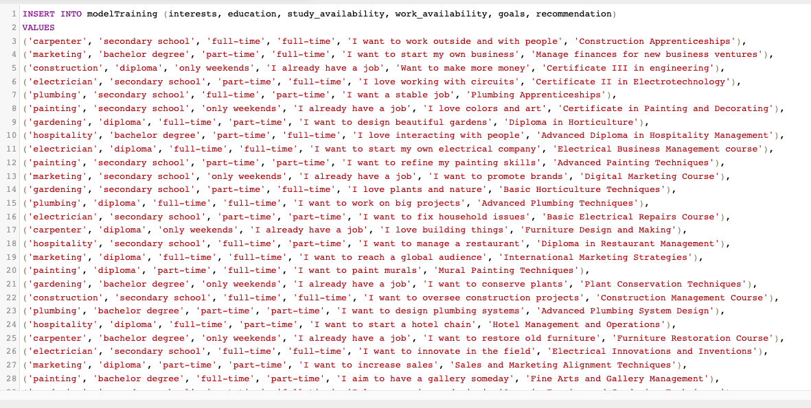
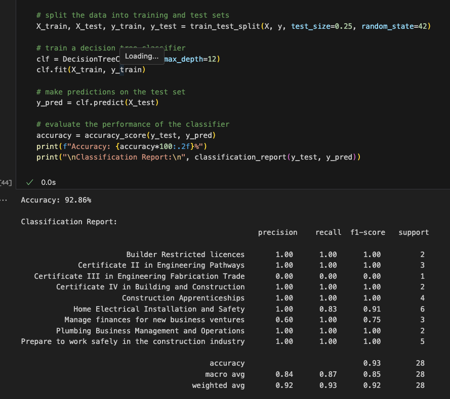

🚀🚀 recommendationSystem -> machineLearning -> decisionTree
about the process
👩🏻💻 ⏳ 💥
What's this all about? 🤌🏿
To create a simple yet powerful machine learning recommendation system, allowing users to find the best course offered by Blue Dog.
The model used for training and predicting is the Decision Tree. A Decision Tree works by breaking down data into subsets through a series of questions, making it especially suitable for recommendation systems.
The user-defined goals text is processed using nltk, a notable natural language processing tool. I applied lemmatization to convert words to their root forms and removed stopwords, which are common words that typically don't add significant meaning to the analysis. Additionally, text preprocessing steps like converting to lowercase and stripping punctuation were undertaken. After these enhancements, we utilized the TF-IDF technique, which measures a word's importance in the text relative to a larger corpus, to ready the data for the decision tree.
What about the data? 📊
Yes, well, that part is tricky. Why? Because I had no historical data on the courses and their impact on students, so I had to make it up. Together with ChatGPT, we created a database of 112 entries with "students" and their choices and preferences. Of course, it's not a model that reflects reality because this data is artificially created (and if I wasn't careful, ChatGPT would start creating artists, nuclear scientists, and ant charmers), but it predicts and operates correctly. With quality data, it can be very powerful.
Model 🌲
Decision tree is a flowchart-like structure where each internal node represents a "test" on an attribute, each branch represents the outcome of the test, and each leaf node represents a class label. It's a powerful tool for both classification and regression problems. By visualizing decisions and decision-making, it provides a clear structure and can easily handle both categorical and numerical data.
After tweaking several hyperparameters and achieving an accuracy rate of 92%, the model was ready for its final training. Once trained, it was then packaged for the Python script responsible for deployment.
Deploy
The API for the Python script was built using the fastAPI framework and deployed on render.com. Deploying machine learning models for free, especially when involving multiple libraries and version models, can be an almost impossible task. This is because the computational capacity provided by free services is limited, and the requirements of the models are ever-increasing. Still, we made it happen 💪🏻.
HERE THE DEPLOYYou can find the entire code in my repository GitHub.